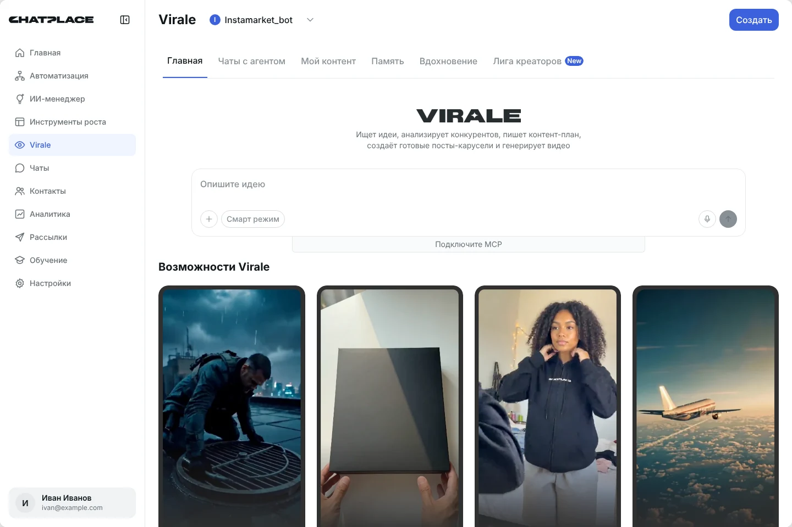
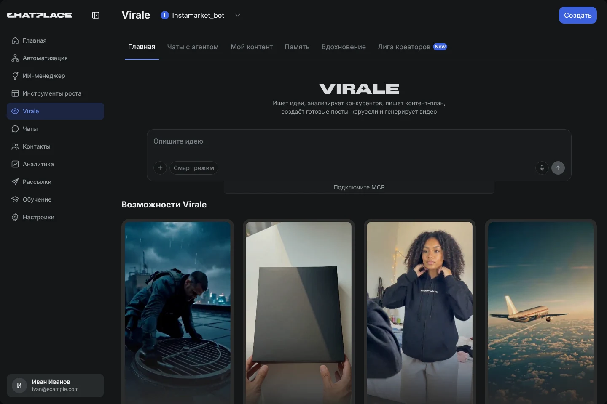

Задача: сделать понятным возврат из Virale в ChatPlace. Когда пользователь открывал Virale, главное меню ChatPlace пропадало, и вместо него появлялось меню Virale. Вернуться можно было только через малозаметный переключатель «Virale / ChatPlace» в верхнем углу.


Разобрался, чем Virale является для ChatPlace: частью сервиса или отдельным продуктом. Для этого прошёл онбординг и изучил тарифные планы.
Прошёл основной путь пользователя в Virale. На детальное изучение всех сценариев времени не хватило, поэтому я сосредоточился на главном.
Это видно по нескольким признакам:
Раз Virale — часть ChatPlace, то и выглядеть он должен как обычный раздел. В текущем виде пользователь, заходя в Virale, как будто попадает в другое приложение и теряет главное меню. Тогда он ищет дорогу обратно через кнопку «Назад» в браузере, а не через интерфейс сервиса. Это неудобно и может снижать удержание пользователей.
Это гипотеза15 пунктов меню, вернуться в ChatPlace можно только через переключатель вверху.
Virale — пункт главного меню, его разделы стали табами под шапкой.
В том числе внутри Virale. Отдельный переключатель «Virale / ChatPlace» больше не нужен.
Шапка с названием, выбором аккаунта и главной кнопкой, под ней табы.
Главная, Чаты с агентом, Мой контент, Память, Вдохновение, Лига креаторов.
Уроки ведут в «Обучение», MCP-коннектор живёт в «Настройках», чат-боты — в «Автоматизации». Кнопка «Как пользоваться?» в Virale ведёт в «Обучение».
Кликабельный прототип обновлённого кабинета. Переходите по разделам через меню слева, по табам внутри Virale или стрелками на панели под экраном.
Это не основная задача, но эти правки делают кабинет единообразнее.